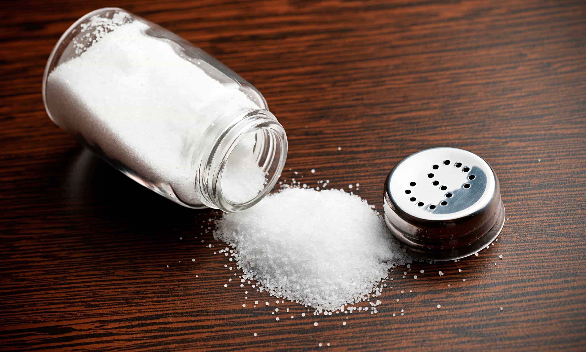
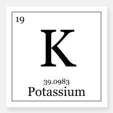
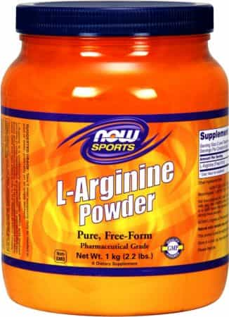
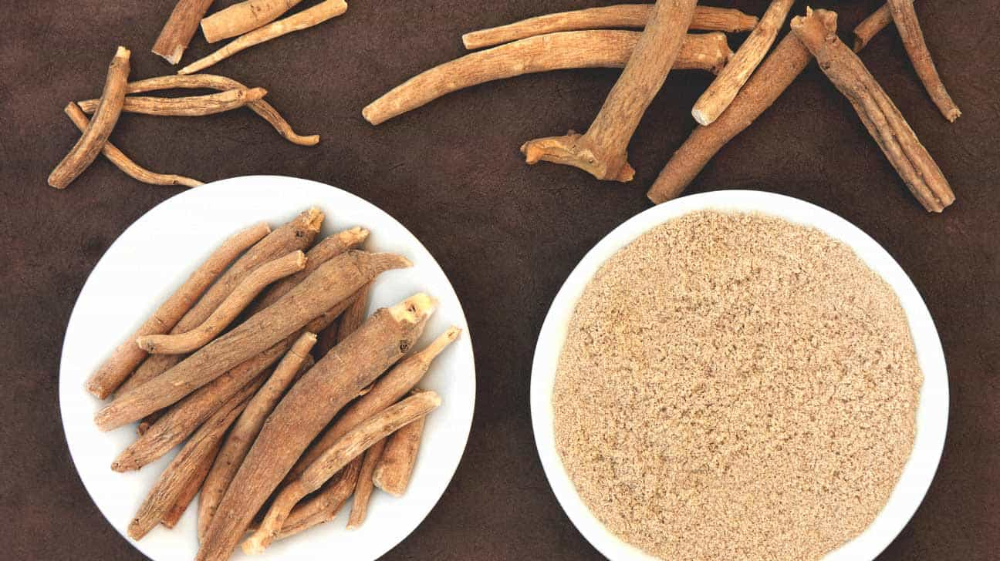

In this article, I’m going to give you a quick rundown on some of the supplements you can use to improve your workouts by a factor of ten. Most of the stuff here can be bought at your local grocery store and costs pennies, unlike the overpriced garbage they sell at GNC.
1. Sodium

This is one of the most underrated and cheapest pre-workout supplements you can take, hands-down. Sodium is one of the seven electrolytes that keep our body hydrated. When taken as a pre-workout for lifting, you will experience better pumps at the gym, giving your muscles a better sense of fullness.
Something basic as eating table salt thirty minutes before you go pump iron will do the trick. Start off with 200 milligrams and increase from there until you get a sense of how much your body needs. This will go a long way if you have a good intake of sodium in your daily meals. You can also experience less cramping during your workouts.
If eating table salt seems too off-putting and gross, you can try seasoning packets for a bit of flavor or even beef jerky, which has a lot of sodium in it. Bringing sodium with you to the gym and using it as an intra-workout supplement can also help during your routine.
2. Potassium

Another electrolyte. Potassium pretty much falls in line with sodium in terms of outcome: better pumps, less cramping, and more hydration. The RDA recommends that a normal person gets about 5,000 milligrams per day. If you are an active lifter, you can go up to one gram per day and get tremendous results.
While you can use potassium sources as a pre-workout, you’ll get a far greater experience if you consume potassium throughout the day. Good food sources for potassium are tomatoes, potatoes, coconut milk, and pineapple juice.
Something that you can pick up off the cooking shelf is cream of tartar (potassium bitartrate), a byproduct during the wine-making process that is used for baking. This costs anywhere between $2 to $5.
Alternatively, a simple potassium supplement could be used if you don’t feel like altering your diet (although eating is always better than supplementation).
A quick warning about cream of tartar and potassium supplements: taking too much in a short amount of time can lead you to running to the bathroom with loose bowels. Also, taking too much potassium and not drinking enough water could cause hyperkalemia (potassium overdose). Start off slowly, and if you experience any diarrhea, then you need to back off a bit.
3. L-Arginine

L-arginine is one of the twenty amino acids. When isolated from other amino acids, L-arginine can be a great tool for your workout. When consumed, it converts into nitric oxide which increases blood flow into the muscles.
When taking L-arginine, it is best to take on an empty stomach and without other BCAA supplements. If you consume other amino acids, the L-arginine will not work. L-arginine only works when isolated and is easily destroyed by stomach acid.
You should take it 20-30 minutes before your workout. Start off at two grams to see how it feels, then slowly increase your dosage. Do not ramp up your intake too quickly or you’ll experience severe discomfort. Personally, I gone up to ten grams of L-Arginine and haven’t experienced any serious negative effects, although I haven’t noticed a big difference in terms of performance after eight grams. Again, start off at two grams and slowly figure out what dose works for you.
Lastly, this supplement needs to be cycled on and off every two to three weeks as you build up a tolerance.
If you do a little bit of shopping around, this supplement can be anywhere from $4 to $20, depending on capsules vs. pills, the amount per bottle, and number of milligrams in each capsule/pill.
4. Ashwagandha

Also known as Withania Somnifera or winter cherry, ashwagandha is a root from India that has been used since the time of the Roman Empire. It has commonly been used as tea and has a relaxing effect on the body. While not really used as a pre-workout like the supplements I’ve mentioned above, ashwagandha can help your workouts by relaxing the muscles during the healing process, among many other things.
Ashwagandha is classified as an adaptogen, meaning it doesn’t do one specific thing. It has been shown in some people to increase their testosterone, increase their thyroid function, regulate their serotonin levels, and other effects. One common side effect of using ashwagandha is drowsiness and slight inhibition due to the calming nature.
Personally, ashwagandha helped me through depression and gives me a sense of not giving a fuck in large dosages. It almost led me to go on a racist rant against Muslims in my local gym.
On the other hand, I have friends who have tried this supplement and cannot notice any changes. I don’t believe everybody will have the same exact effects with ashwaganda, making it somewhat unreliable. It really comes down to if it’s working out for you or not on a personal level. If you’re somewhat depressed and suspect your hormones may be out of normal range, then ashwaganda may be a supplement worth trying. If you don’t notice anything after your first run, though, then just disregard it.
This supplement comes in two different forms, a capsule or a beverage. This supplement can range anywhere from $8 to $50. However, do not buy the expensive varieties; they are merely inflating prices to make more money. I have taken the $8 bottle brands (Nature Valley) and have noticed a difference in my mood. I haven’t tried the beverage version, so I can’t give an honest opinion on it. Fair warning: ashwagandha does have a slight odor to it.
For dosage, you can try three grams in the morning and late afternoon each to see how you respond. If you have a stomach that is easy to upset, it is recommended you take it with food. If you have an ulcer, it is best to avoid ashwagandha to avoid any health complications. Also, if you are on any medication, make sure you check with your doctor, as ashwaganda does have some compatibility issues with some medications.
I have gone up to ten grams of ashwagandha in a day without suffering any side effects, but I have found that the sweet spot is between six and eight grams. This supplement does need to be cycled on and off every so often as you build up a tolerance.
So there you have it—four supplements that have increased my workouts and standard of living. Good luck.
Read More: Supplements Don’t Build Muscle